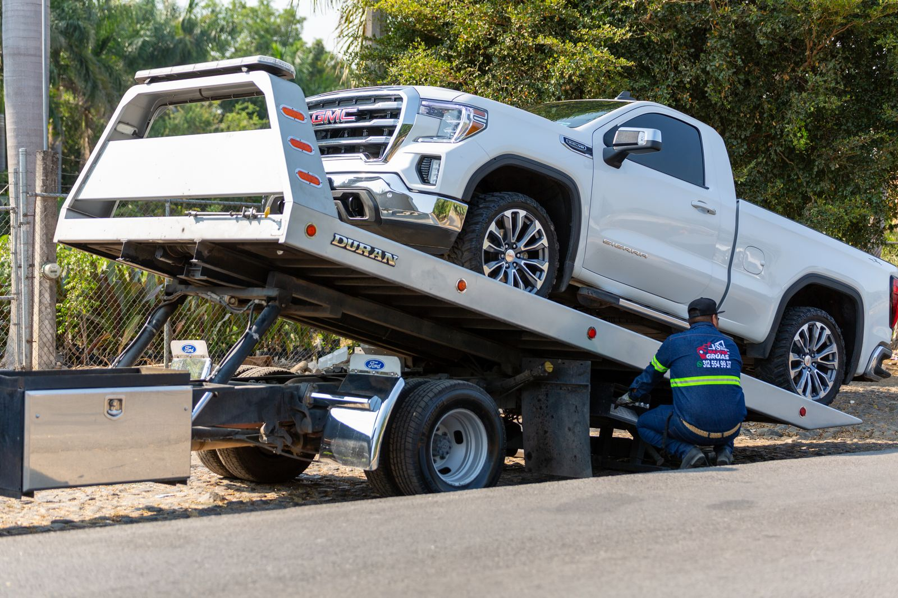

Les drivers gréés ne naviguent pas.
Ils tapent.
Le marché entier est une recherche et un appel téléphonique. Vos pages doivent charger instantanément, afficher la disponibilité 24/7, et mettre le bouton d'appel où un pouce tremblant peut le trouver.
- ✓Pages d'appel en un clic— une touche de la recherche à votre téléphone sonnant
- ✓Pages de type emploi— la récupération des accidents, le remorquage des motocycles, les plates-formes, les treuils,
- ✓Pages réelles de la zone de service— chaque ville que vous couvrez, avec un véritable détail local
- ✓24h/24 et 7j/7 clairement visible— sur le profil, sur le site, dans la zone principale
Les démarrages de saut ne sont pas des remorqueurs.
Les mots-clés de remorquage sont sur le déplacement du véhicule. Les mots-clés de bord de route — démarrages de saut, lockouts, livraison de carburant, changements de pneus — sont sur la fixation sur place.
Voici exactementCe que je fais.
Pack de cartes de mots clés d'urgence
Le camion Tow près de moi, le remorquage 24 heures sur 24 — les recherches qui sonnent ce soir, avec un profil construit pour les gagner.
Pages de zone de service qui sont réelles
Chaque ville que vous desservez reçoit une véritable page (couloirs, points de repère, notes de réponse) et non des modèles de noms échangés.
Pages d'assistance routière
Jump starts, lockouts, carburant, pneus: le deuxième mot clé du marché la plupart des entreprises de remorquage partent sur la table.
Moteur de révision avec les bons mots
Critiques qui disent "fast" et "arrivé en 20 minutes" — exactement ce que le prochain pilote échoué scanne.
Comment le travail commence
Du premier appel à la sonnerie du téléphone.
L'audit gratuit
Parlez-moi de votre opération de remorquage — Je vais renvoyer un audit gratuit de votre présence Google: quelles recherches urgentes vous montrent, ce qui manque, et quels appels vont aux concurrents.
Pack de cartes de mots clés d'urgence
Le camion Tow près de moi, le remorquage 24 heures sur 24 — les recherches qui sonnent ce soir, avec un profil construit pour les gagner.
Pages réelles de la zone de service
Chaque ville que vous desservez reçoit une véritable page (couloirs, points de repère, notes de réponse) et non des modèles de noms échangés.
Critiques qui disent :
Critiques qui disent "fast" et "arrivé en 20 minutes" — exactement ce que le prochain pilote échoué scanne.
Les membres du club attendent. Ce n’est pas le cas de vos appelants.
Pourquoi remorquer les opérateursChoisissez-moi.
Un plan.Tout est inclus.
- ✓SEO on-page
- ✓SEO technique
- ✓SEO off-page et développement d'autorité
- ✓Liens partenaires dès le 3e mois
- ✓SEO local pour 1 zone ou ville
- ✓SEO IA : AEO, GEO & AISO
- ✓Rapport mensuel
- ✓WhatsApp direct ou votre plateforme préférée
Même plan de référencement que sur la page d'accueil — pas de balisage de l'industrie.Demandez un devis personnalisé.
Ce soir, le chauffeur échouéest en train de chercher.
Parlez-moi de votre opération de remorquage — Je vais renvoyer un audit gratuit de votre présence Google: quelles recherches urgentes vous montrent, ce qui manque, et quels appels vont aux concurrents.
Obtenez mon audit gratuit →